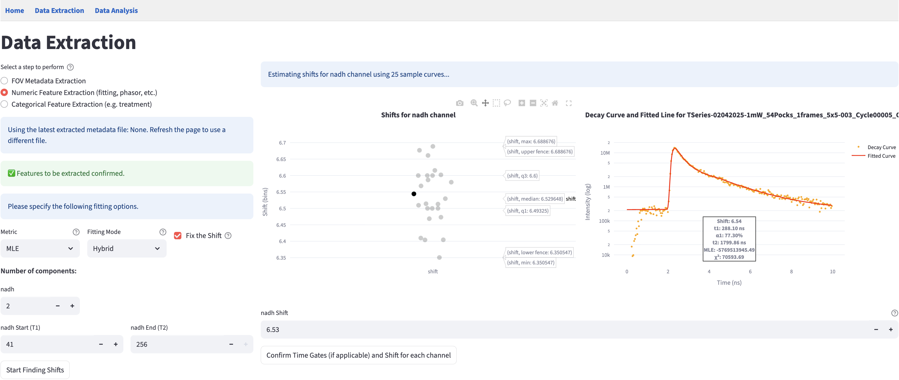
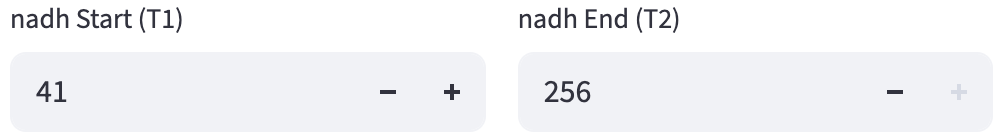
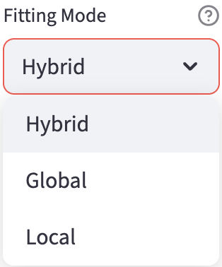
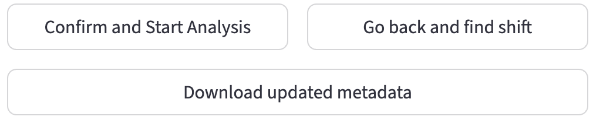

5 Numerical Feature Extraction
In this step, FLIM Playground extracts single-cell numerical features from the raw data in a folder. For each channel, the features to be extracted are specified in the user-selected feature extractors. The available feature extractors are:
- Lifetime fit: fit exponential models to decay curves to estimate lifetimes and their fractional contributions by minimizing an objective function.
- Lifetime fit free: transform decay curves to phasor space using Fourier transform to obtain phasor coordinates.
- Intensity Morphology: morphological features of single cell ROI masks
- Intensity Texture: texture features of single cell ROI intensity images
5.1 Input
A csv extracted in the fov metadata extraction step that contains the metadata of the FOVs including:
- required file paths
- decay type
- decay info
- selected feature extractors for each channel
- fit free calibration method(if fit free calibration is required)
Users can either upload a previously extracted metadata file (left), or use the cached metadata file just extracted in the fov metadata extraction step (right).
For Lifetime fit and Lifetime fit free feature extractors, the first step is always calibration.
5.2 Calibration
Calibration in FLIM is essential because raw decays are convolved with the instrument response function (IRF)—the timing profile of the detection system’s response to an ultrashort light pulse that broadens and shifts the measured decay—so without correcting for these, fitted lifetimes and phasor positions are biased and not comparable across days, samples, or instruments.
5.2.1 Fit Calibration
During different experiments, the IRF may shift differently with respect to the measured decay. Before applying reconvolution fitting, the IRF shift needs to be estimated for each channel if the Lifetime fit feature extractor is selected for the channel.
It is performed in two steps:
- Gather the high signal-to-noise ratio (SNR) decay curves
- For each curve, perform reconvolution fitting and set shift value as the free parameter to be optimized/fitted.
The distribution of the shift values is displayed as an interactive scatter plot. When clicking on a point, the corresponding decay curve with the fitted curve and the key statistics are displayed for diagnostics. Based on the distribution or using certain prior knowledge, users can specify the shift value applied to all field of views (if Fix the Shift is selected, see fitting options), or use the fov-specific shift value found by the fitting (if Fix the Shift is deselected).

Gather High SNR Decay Curves
The high SNR decay curves are constructed automatically based on the decay type. If it is in 2D format, a total of the brightest 30 curves that are below 100000 photons are selected and evenly distributed across all field of views (one csv file is considered as one FOV). If it is in 3D/4D format, the field of views are images, and one curve is constructed for each image that includes all the non-zero pixels within the ROI mask.
Reconvolution Fitting
Fitting is essentially an optimization problem: it minimizes the difference between the fitted curve and the measured curve. The fitted curve is modeled by a \(n^{th}\) component exponential function convolved with the shifted IRF, and the difference is modeled as an objective metric. Therefore, users are provided with controls over two parts of the fitting process through the fitting options panel:
- How to construct the objective metric
- How to perform the optimization
Implementation-wise, FLIM Playground uses the lmfit package that takes generic objectives to perform the optimization process that is flexible enough to handle the reconvolution fitting.
If at least one channel has Lifetime fit feature extractor selected, the fitting options panel is displayed.
Let’s break down the fitting options one by one.
Number of Components
The number \(n\) in the \(n^{th}\) component exponential function: \[% Generic (non-normalized) n-exponential decay I(\mathbf{t})=\sum_{i=1}^{n} A_i\, e^{-\mathbf{t}/\tau_i}, \qquad \tau_i>0 \]
Therefore, \(n\) determines the parameters to be fitted: the amplitudes \(A_i\) and the lifetimes \(\tau_i\). \(\mathbf{t}\) is the time axis of the decay curve calculated by the duration and time bins from the decay info: \[\mathbf{t}=\bigl[0,\ \Delta t,\ 2\Delta t,\ \ldots,\ (N-1)\Delta t\bigr],
\quad \text{where }\Delta t=\frac{T}{K}.
\]
It supports \(n=1,2,3\) components.
Additionally, the offset is a parameter to be fitted.
Time Gates
Due to the deadtime of the system certain time bins from the head and/or tail of the decay curve are not reliable. The T1 (head) and T2 (tail) gates are used to select the time range of the decay curve to be fitted. Users can inspect the decay curve by clicking the full screen mode button of the plot on the right of the shift result. Hover-based interaction is implemented so users can see the time bin numbers to have a better sense of the time range.

Only the time bins within the T1 and T2 gates are used to calculate the cost metric.
Metric
Maximum Likelihood Estimation (MLE): it estimates the parameters by maximizing the likelihood function, which is the probability of the measured data given the model parameters. A mathematically convenient way to do this is to minimize the negative log-likelihood function:
\[ \text{NLL}(\theta; t_s,t_e) = -\sum_{k=0}^{N-1} \mathbf{1}_{[t_s,t_e]}(t_k)\,\bigl[y_k \log m_\theta(t_k) - m_\theta(t_k)\bigr]. \]
\(\mathbf{1}_{[t_s,t_e]}\) is the indicator function that is 1 if \(t_k\) is within the time gates\([t_s, t_e]\), and 0 otherwise. \(y_k\) is the observed count at time \(t_k\), and \(m_\theta(t_k)\) is the model prediction at \(t_k\).
Least Squares (LS): it estimates the parameters by minimizing the sum of the squared differences between the measured curve and the model prediction.
Fitting Mode

After constructing the objective metric, the fitting mode is used to determine the optimization algorithm. It is a trade-off between the speed and the effort to avoid local minima.
Global: It uses thedifferential evolutionalgorithm, a derivative-free, population-based but slow global optimizer.Local: It uses theleastsq(least squares with Levenberg-Marquardt) algorithm if the chosen metric isLS, otherwise it uses thenelder(Nelder-Mead) algorithm.
Hybrid: The most time-consuming option but combines the best of both worlds. It uses thedifferential evolutionto find a good initial guess to all the parameters, and then uses theLocalto drill in.
5.2.2 Fit Free Calibration
Users get to choose between the following two methods to calibrate the IRF shift in the configuration step.
Shift IRF
It is performed similarly to the fit calibration steps, but in the second step, the shift is not optimized (fitted). It shares the same interface as the fit calibration step, where a scatter plot of the shift values is displayed for each channel, only that the plot is not interactive to show the fit. Instead, it outputs the shift that maximizes the cross-correlation between the IRF and each decay. If Fix the Shift is selected, users can specify the shift value that will be applied to all fields of view. Otherwise, the shift value is chosen to be the one that maximizes the cross-correlation between the IRF and the decay.
If both the Lifetime fit and Lifetime fit free feature extractors are selected for this channel, the optimized IRF shift derived from the fit calibration step is reused for the Lifetime fit free feature extractor.
In addition to shifting the IRF based on the chosen shift values, each decay curve is subtracted an offset value and clipped to 0 if the time bin is negative after the subtraction. The offset is chosen to be the mean of the last 10th percentile of the decay curve (tail).
Finally, the signals of the shifted IRF are deconvolved from the offset-subtracted decay curves using phasor.phasor_divide from the phasorpy package.
Fluorescence lifetime standard
Because the fluorescence lifetime standard is measured in the same system as the decay curves and we know its lifetime, there is no need to account for the IRF shift and the offset. Therefore
phasorpy’s lifetime.phasor_calibrate function is used to calibrate all the decay curves behind the scene when calculating the phasor coordinates.
5.2.3 Confirm Calibration
Once users are satisfied with the calibration settings (fitting options and shift values), they can click the Confirm Calibration button at the bottom of the page.
Once confirmed, the left panel prompts users to either apply the calibration settings to the downstream extractors or calibrate again. Users can also save the updated settings (fitting options and shift values) to the metadata file.

5.3 Feature Extraction
If the selected feature extractors do not require IRF shift calibration, or users have finished the calibration, they can proceed to the feature extraction step by clicking the Confirm and Start Analysis button.
Similar to the fov metadata extraction step, FLIM Playground extracts the features and displays the extraction status for each field of view.
A progress bar is rendered to show the feature extraction progress for each FOV (bottom right).
Warnings are displayed if cells have NaN values for some features. They are not excluded from the final CSV file.
5.4 Save Results
Once the feature extraction is finished, users can save the results to a csv file by clicking the Download button at the bottom of the page.